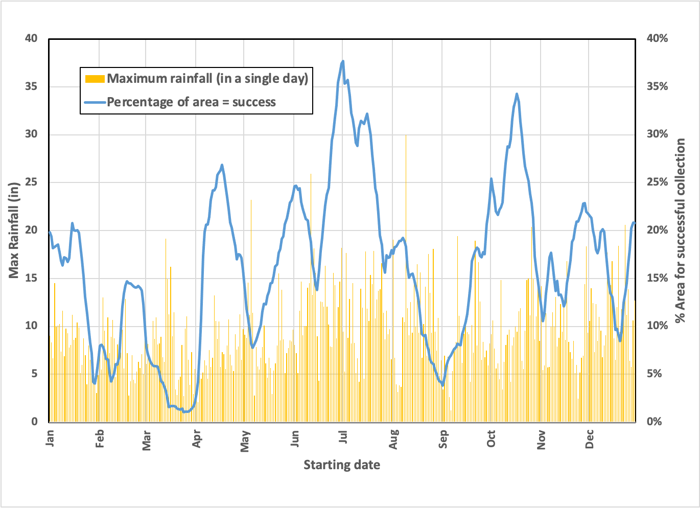
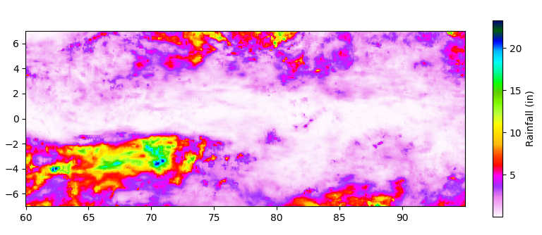
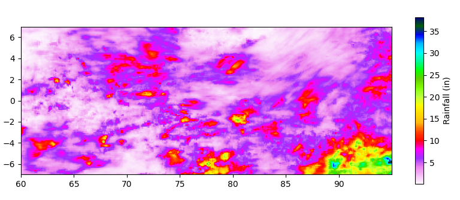
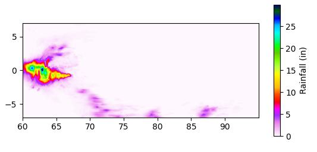
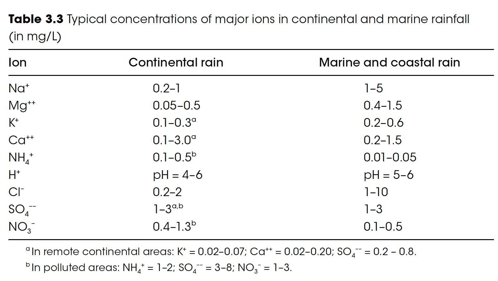
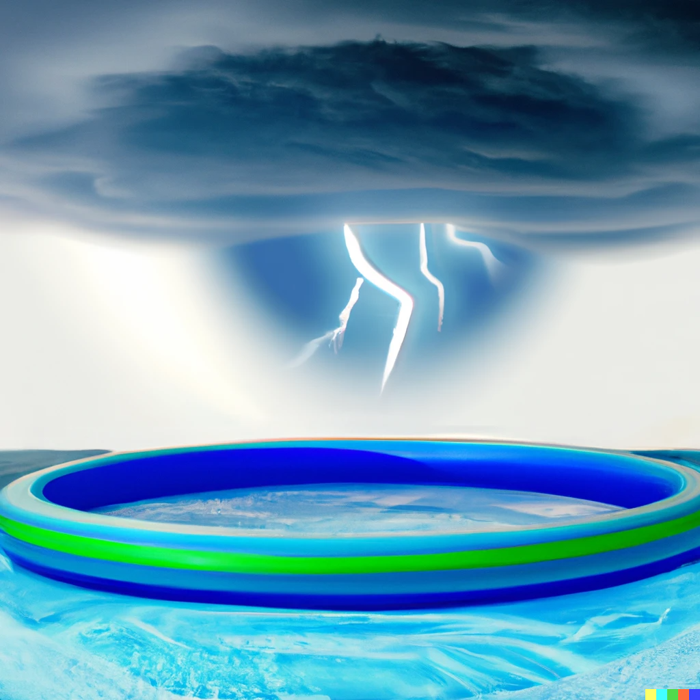

We’re taking a really “old school” approach to climate, considering primarily technologies that existed before the Industrial Revolution. Here’s where we are.
I am asking: In lieu of large-scale desalination, would it be practical to collect rainwater from thunderstorms in the Indian Ocean (near the Equator) and deliver it to arid North West Australia for irrigation? Weather patterns limit this approach, but they haven’t yet killed it outright.
That part of the ocean receives about a foot per month, meaning that mining an area of 400 acres for 30 days will, on average, fill a modern supertanker with enough water to irrigate a substantial amount of land. But we cannot tolerate too much variability without subjecting the entire project to the whims of the weather.
I’ve extended the analysis of last time, which started arbitrarily on January 1, 2020, to specify better the probability of picking a good spot for our collection based on an arbitrary start date. This also allowed me to analyze the data to see if it made sense.
Here’s what I see:

So, if we picked a spot at random in late March, we’d have a tough time ensuring a full tanker load in 30 days, while doing the same exercise in July would give us a good chance anywhere in this sector. Seasonality does matter, even though it’s the Equator.
Let’s look at the distribution of “parking spots” to see how precise we’d need to be during the driest 30-day period (starting March 17, 2020):

Of course, it depends on the particulars of the long-range forecasts, but there are definite clusters of wet areas to park. Interestingly, parking within 1 degree of the Equator (north or south) would have been a bad idea on March 17, perhaps because it is close to the spring equinox). If so, a similar pattern should be seen around the fall equinox.
Is it? Let’s look at the second lowest period a collection starting September 1:

The pattern is not symmetrical. It’s still quieter around the Equator, but the rainfall hasn’t shifted northward appreciably. Notably, the most intense single day, August 9, is almost exactly on the Equator, with rain approaching the highest ever recorded:

I’m sure this reflects large-scale geodynamics, which, while interesting, is best left to expert meteorologists. Nevertheless, to me, the data analysis suggests that the project is feasible from a positioning perspective—seasonality and location don’t seem to be random, and picking a location carefully can shorten the time needed to fill our transporter.
We need to continue exploring potentially fatal flaws. Here are a few on my mind:
-
Can rainwater collected over the ocean be used directly without further treatment?
-
Is any large surface area shape aerodynamically unstable, given strong updrafts and downdrafts during thunderstorms?
-
Can a vessel navigate from collection to delivery on wind power alone, given the seasonal constraints of agriculture and the size of the load?
-
Is transporting water through pipelines too costly, either in terms of energy or carbon?
I will try to address all of these if needed, but I only have time this week for one, and the second one (as a general topic) will take an experienced hand in aerodynamics if I can find one willing to discuss a hypothetical pseudo-design.
Can rainwater collected over the ocean be used directly without further treatment?
Intuitively, it might seem that rain everywhere is the same. But if substantial differences (thinking salt concentration) make the rainwater we’d collect unsuitable for terrestrial irrigation, then the whole concept may need to be rethought. We know already that rain composition is affected by the environment (remember “acid rain”?), so it’s not a completely absurd concern.
Down into a (shallow) rabbit hole we go!
So, it turns out that rain over the ocean is indeed different than rain over the land. For precipitation to form, water needs to condense into droplets, requiring a particle (think dust). Over the oceans, these particles are mainly from evaporated sea spray (salt dust), which dissolves into the water easily. Over the land, these particles are more like fine sand particles that don’t dissolve at all. Consequently, rain forms more quickly over the oceans, and the rainwater is, indeed, saltier.

We may need to avoid “ sea spray ” contamination depending on our collection scheme. It looks as if most of the sea spray falls harmlessly back into the ocean, but for rain to form, at least some spray is elevated high into the air. Given the amount in rain, I imagine there are decreasing amounts of salt as we get further from the surface. Considering the updrafts that precede a thunderstorm, this may be a serious concern, so there may be a minimum collection height above the surface to ensure “pure” rainwater.
Splashing could doom a design like a floating inflatable pool:

But the salient question is, “What is ‘too salty for irrigation’?”
Irrigation water with a salt concentration under 70 mg/L is considered safe for plants, 1 , and salt in seawater is about 35,000 mg/L. So, the simple answer is “no”: The numbers in the table above add up to well under 70 mg/L. Still, it does suggest that we should monitor for severe seawater contamination before blindly using the water we collect. And if deployed, we will need to track salt accumulation in the soil.
But, to its advantage, rain collected from thunderstorms, in particular, contains molecules that form when powerful lightning breaks apart the dinitrogen that comprises 80% of the air. The molecules that form from this process are identical to available nitrogen fertilizer, which is created today from methane and air in the Haber-Bosch process. It’s an interesting feature that could reduce costs to the user and provide a cleaner fertilizer source. If successful, an added element of the installation could be specially designed lightning rods that facilitate this chemistry! So why waste the opportunity and the energy?
Thank you for reading Healing the Earth with Technology. This post is public so feel free to share it.
https://watereuse.org/salinity-management/le/le_5.html